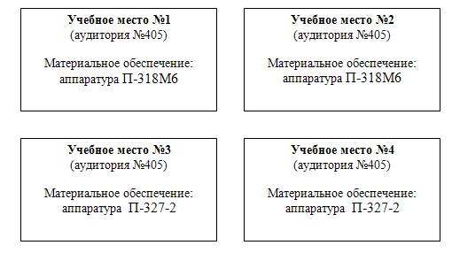

Тема №3. Устройство и эксплуатация систем передачи с частотным разделением каналов
Занятие №19. Эксплуатация аппаратуры тонального телеграфирования П-327 и П-318.
Учебные вопросы:
Литература:
МЕРЫ БЕЗОПАСНОСТИ ПРИ РАБОТЕ НА АППАРАТУРЕ
Личный состав, работающий на аппаратуре, подвергается опасности. Источниками опасности на аппаратуре являются высокие напряжения. Следовательно, при работе курсантам необходимо соблюдать осторожность и строго выполнять правила техники безопасности.
Запрещается:
- без разрешения преподавателя производить включение электропитания на главном распределительном щите;
- самостоятельно включать электропитание аппаратуры;
- включать электропитание аппаратуры без предварительной проверки заземления;
- самостоятельно производить замену предохранителей на аппаратуре;
- самостоятельно выдвигать блоки и снимать предохранительные щиты аппаратуры;
- пользоваться неисправными приборами.
В случаях обнаружения неисправностей аппаратуры, измерительных приборов или проводов необходимо немедленно сообщить об этом руководителю занятия.
При поражении электрическим током необходимо немедленно отключить электроустановку или отделить пострадавшего от токоведущих частей, оказать ему первую медицинскую помощь, доложить преподавателю и вызвать врача.
Схема организации учебных мест при проведении занятия
Учебная бригада №1, место проведения аудитория №405
